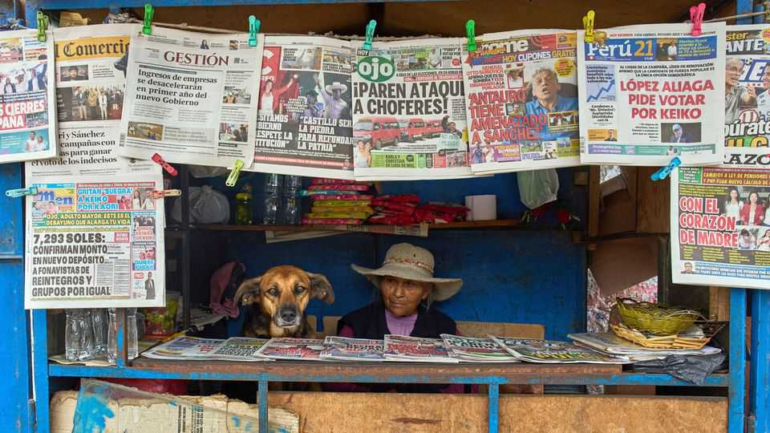

What happens when a presidential vote is a dead heat?
Peru, looking for its ninth president in a decade, is in a tight spot
June 11th 2026

Peru often marches to a different beat from the rest of South America. When its neighbours were run by right-wing military dictatorships in the 1960s and 1970s, a leftist general was in charge in Lima. In the 1990s, Peru veered into electoral authoritarianism while others were consolidating democracy. It first elected a left-wing leader long after the “Pink Tide” of the early 2000s—which saw leftists win power across Latin America—had crested.
This year, Peru might at last fall into sync with the rest of the region. After Argentina, Ecuador, Chile and Bolivia turned right, political analysts asked if Peru would be added to the list of countries with Trump-aligned leaders. Conditions seemed ideal. The left had been discredited by the hapless presidency of Pedro Castillo, while an explosion of gang violence had made law and order the most pressing issue for voters. Peruvians voted in a run-off between right-wing Keiko Fujimori and the left-wing Roberto Sánchez on June 7th.
Ms Fujimori, on her fourth straight run for the presidency, led opinion polls for most of the campaign. In the final stretch, though, Mr Sánchez tacked to the centre and closed the gap. The votes are split nearly evenly between the two. At first Mr Sánchez held a slim lead. But on June 11th, as The Economist went to press, with 98% of the vote counted, Ms Fujimori had slipped ahead by just 651 votes out of 18m. She pulled ahead as ballots came in from abroad, which broke for her disproportionately. The betting platform Polymarket gave her a 97% chance of victory.
Neither candidate is popular. Ms Fujimori is best known as the eldest daughter and political heir of Alberto Fujimori, an autocrat who oversaw human-rights abuses while in government between 1990 and 2000. Mr Sánchez, meanwhile, centred his campaign on pardoning Mr Castillo, who was convicted last year for attempting to close down Congress and rule by decree in 2022. While their core supporters propelled them to the run-off, more Peruvians cast blank or spoiled ballots in the first-round than voted for either candidate.
Ahead of the run-off, voters struggled to assess who would do the least damage. One podcast dedicated an episode to the question “Who is more of a coup-monger?” Some voters bought dollars ahead of the vote. Despite frequent bouts of political upheaval, Peru’s mining-powered economy has remained stable largely thanks to high copper and gold prices and investor-friendly policies enshrined in the constitution, which Mr Sánchez wants to replace.
If she does win, Ms Fujimori will lack the mandate enjoyed by her father and the region’s more populist leaders, who beat their rivals with the support of millions. Peru’s next president will take office with a margin of victory so small that all of its voters could fit in a football stadium. Her party is also expected to wield less power in the next Congress—sufficient to shield her from impeachment but not to pass ambitious reforms.
Recounts and legal wrangling could easily drag on into July. Fortunately, Peruvians have learned to shrug off political uncertainty. Three of the four tightest presidential elections in Peru’s history took place in the past decade, according to an electoral expert, Fernando Tuesta. Ms Fujimori lost the last two by a quarter of a percentage point. After her 2016 defeat, she embraced the role of opposition leader with zeal, using her party’s congressional power to chuck out four out of the next eight presidents. “I don’t even remember our current president’s name. Velasco? Balazar?” says Hernán Santos, a taxi driver in Lima. (The answer: Balcázar.)
Ms Fujimori’s persistence has forced Peruvians to rehash debates about her political dynasty. Many headed to the polls with the enthusiasm of the protagonist in “Groundhog Day”. “I hope I live long enough to see an election without Keiko,” says Victoria Ramos, a 55-year-old newspaper vendor who nonetheless voted for her hoping she would rein in crime. “I want her to be like her father and bring order.”
While Ms Fujimori promised military-run mega-prisons and deportation of immigrant criminals, Mr Sánchez cast a “corrupt-mafia pact” as the ultimate source of chaos, claiming that laws which Ms Fujimori’s party helped to pass had weakened the fight against organised crime. Speaking to The Economist, he suggested that Donald Trump did not endorse Ms Fujimori because the Americans “did their homework. They know very well that this level of instability is unforgivable and who’s responsible.”
While he accused Ms Fujimori of seeking impunity for her friends, Mr Sánchez excused Mr Castillo’s 2022 power grab as a “politically understandable” act of desperation. He claims that he would not follow the same path if elected and obstructed by Congress. Instead, he would insist on dialogue, encouraging protests if needed.
Ms Fujimori is already a magnet for protests across southern Peru, where voters blame her for propping up an interim president whose crackdown killed 49 civilians. If elected, she could struggle to contain her detractors while making good on a “reservoir of promises from four campaigns”, says Mr Tuesta, the analyst. “If she can’t deliver quickly, the streets will mobilise.” ■
Correction (June 10th): A previous version of this article slightly understated Ms Fujimori‘s margin of defeat in the past two elections.
Sign up to El Boletín, our subscriber-only newsletter on Latin America, to understand the forces shaping a fascinating and complex region.